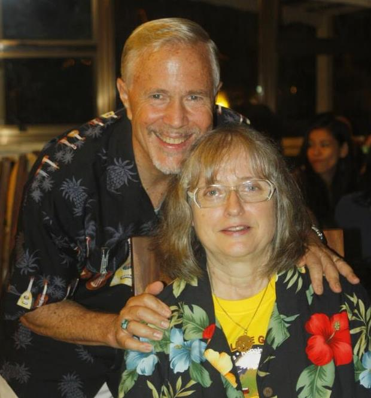

|
The Harvesters International Bible Training Center (HIBTC) is a Bible school founded on June 11, 2012 in
Tagaytay City, Philippines. We are training people to serve the LORD and the world with the Love of God. |
 Founders Lyford and Martha Morris |
Mission"To equip and train stable ministers in the Word of God, the leading of God’s Spirit, to live daily in love, faith, and victory." |
|
Vision"An unending move of God in the Philippines and Asia with Spirit-Led Ministers and 7 million new disciples of Jesus Christ and 1000 new churches." |
|
AwardsDiploma, 1 and 2 year |